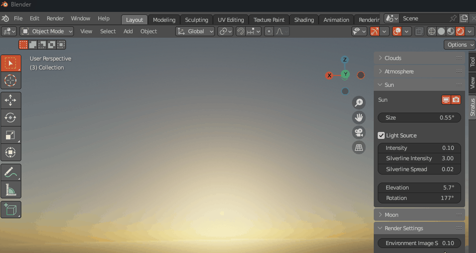

Sun
Note
This page is under construction.
Lighting
Size
Size of Sun.

Light Source
Enables the Sun as a light source for both the atmosphere and cloud layers.
Intensity
Strength of Sun disk.

Silverline Intensity
Intensity of the bright outline along the edge of the clouds.

Silverline Spread
The spread of the bright outline along the edge of the clouds.

Position
Elevation
Sun Angle from horizon.

Rotation
Rotation of Sun around zenith.